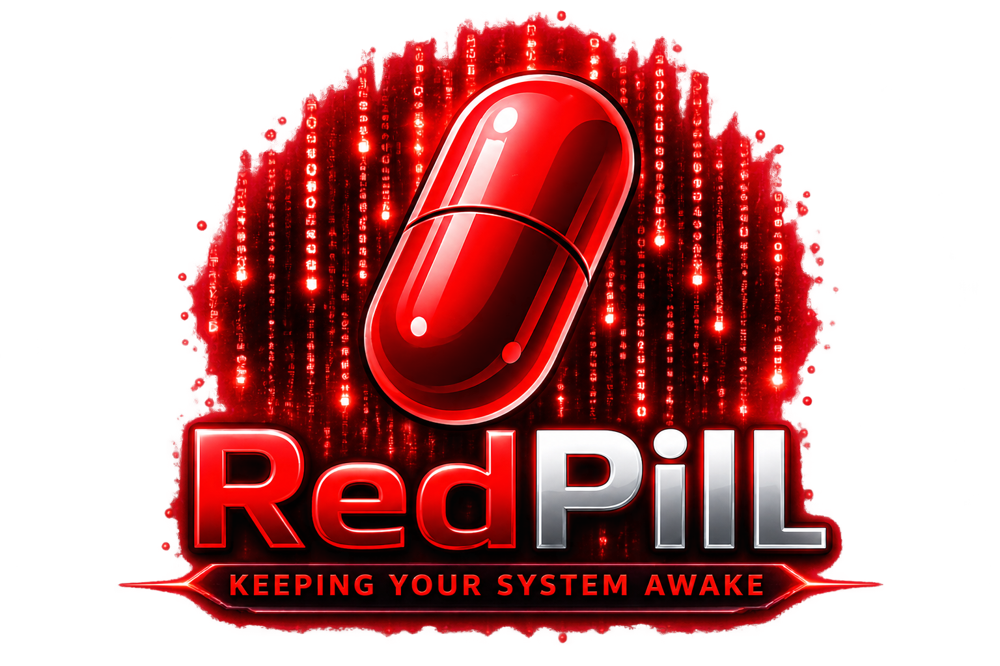

Última actualización: 22 de septiembre de 2026Política de Privacidad
Esta política explica el tratamiento de información de RedPill. RedPill es desarrollada y publicada por Corvin Develop.
1. Información general
RedPill es una aplicación de escritorio que simula actividad mínima del usuario para ayudar a mantener el sistema despierto y permite controlar esa actividad desde su interfaz y el área de notificación del sistema.
2. Datos personales
RedPill no requiere una cuenta de usuario y Corvin Develop no recopila, almacena ni transmite datos personales mediante RedPill.
3. Actividad de mouse y teclado
Para detectar cuándo el usuario vuelve al computador, RedPill observa localmente eventos de actividad del mouse y teclado. Esta detección se utiliza únicamente para controlar la simulación de actividad y no se transmite a Corvin Develop ni a servidores externos.
4. Permisos del sistema
Según el sistema operativo, RedPill puede requerir permisos para detectar o simular actividad de entrada. En macOS, esto puede incluir permisos de accesibilidad u otros permisos relacionados proporcionados por el propio sistema. Estos permisos se utilizan localmente para las funciones de RedPill.
5. Registro y funcionamiento local
El registro mostrado por RedPill corresponde a acciones de funcionamiento de la aplicación. Corvin Develop no opera un backend para recibir este registro ni la actividad detectada por la aplicación.
6. Telemetría, publicidad y terceros
RedPill no incluye publicidad, analítica, telemetría ni mecanismos de seguimiento operados por Corvin Develop.
7. Retención y cierre
RedPill puede permanecer abierta en segundo plano desde el System Tray de Windows o la barra de menús de macOS aunque la simulación esté detenida. Al salir completamente de la aplicación, RedPill no mantiene servicios propios ejecutándose.
8. Cambios a esta política
Esta política puede actualizarse si cambian las funciones de RedPill, los permisos necesarios o los requisitos aplicables. La fecha de última actualización aparecerá al comienzo de esta página.
9. Contacto
Para consultas sobre privacidad o soporte de RedPill, escribe a corvindevelop@gmail.com.